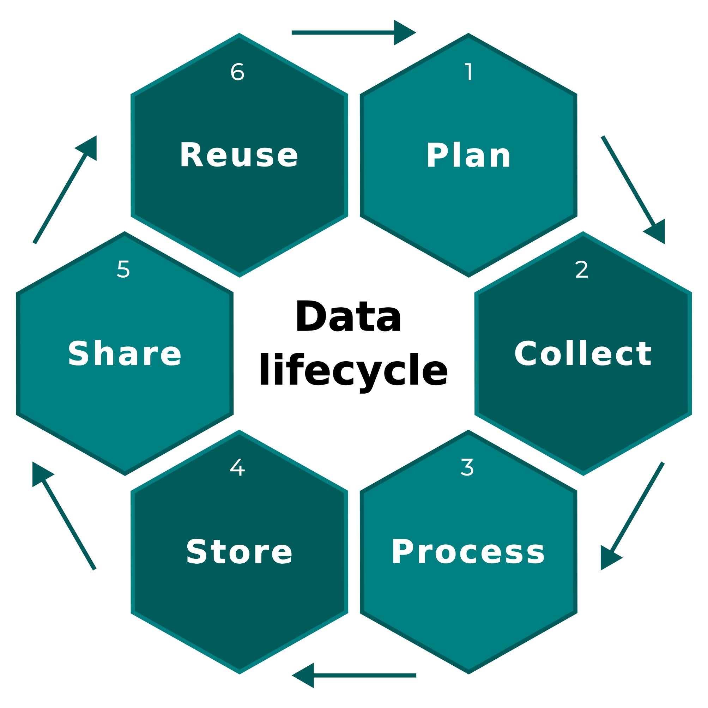
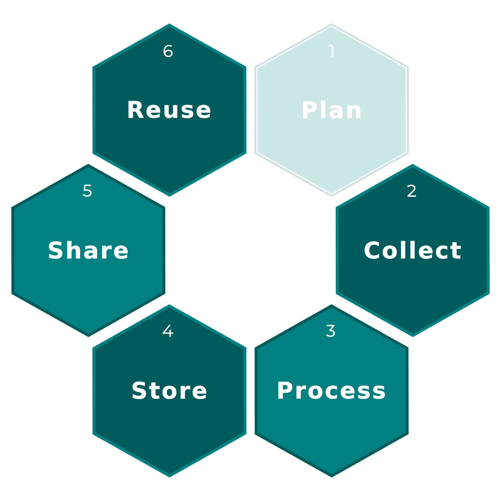

Data lifecycle

Data lifecycle

Choosing a data file format
Why are there different file formats?
- A file format defines how information is organised, represented and stored
- There is no universal file format: each format addresses different needs
Nature
Tabular data, text, images, spatial data, bibliographic data, etc.
Structure
Tabular, hierarchical, relational, multidimensional, etc.
Representation
Text-based or binary
Openness
Open or proprietary formats
Interoperability
Compatibility with
different software and OS
Performance
File size,
reading and writing speed
Long-term preservation
Ability to store, access and reuse data
over time
What types of data and file formats?
Tabular data
Data organised into rows and columns, with variables and observations
.csv .tsv .xlsx .ods
(Semi-)structured data
Data organised according to a defined structure, which may be hierarchical or relational
.json .yaml .xml .sql
Unstructured data
Documents, web pages and other content without a predefined tabular structure
.txt .html .md .pdf
Spatial data
Data describing geographical objects (vector data) or information on a grid (raster data)
.shp .gpkg .geotiff .netcdf
Multidimensional data
Data organised along several dimensions, such as time, depth, latitude, longitude and variables
.netcdf .hdf5
Multimedia data
Pictures, photographs, satellite imagery, illustrations, videos and audio files
.jpg .png .tiff .mp3 .mp4
Other data families
Scientific references, compressed files, R-specific files, etc.
.bibtex .ris .zip .rds .rdata
Questions to ask before choosing a format
What is the nature and structure of my data?
Which software and users will need to access the data?
Do I need to be able to read the content directly?
Are file size and performance important?
Do I need to preserve metadata or complex data structures?
Is the format suitable for sharing and long-term preservation?
Data file formats and
Tabular data - Text-based files
Comma-separated values (.csv)
Tab-separated values (.tsv & .txt)
Tabular data - Spreadsheets
Microsoft Excel (.xls & .xslx)
Google Sheets (none)
Import data w/
readxl::read_excel()readxl::read_xls()readxl::read_xlsx()
Export data w/:
writexl::write_xlsx()
Import data w/
gsheet::gsheet2tbl
OpenDocument (.ods)
Import data w/
readODS::read_ods()
Export data w/:
readODS::write_ods()
Hierarchical & (semi-)structured data
JavaScript Object Notation (.json)
Yet Another Markup Language (.yml & .yaml)
Import data w/:
jsonlite::fromJSON()jsonlite::read_json()
Export data w/:
jsonlite::toJSON()jsonlite::write_json()
Import data w/:
yaml::read_yaml()
Export data w/:
yaml::write_yaml()
Extensible Markup Language (.xml)
Hypertext Markup Language (.html)
Import data w/:
xml2::read_xml()
Export data w/:
xml2::write_xml()
Import data w/:
xml2::read_html()
Export data w/:
xml2::write_html()
Unstructured data
Other plain text files (.txt, etc.)
Import data w/:
readLines()
Export data w/:
writeLines()
Binary files
External representation of objects (.Rdata & .rds)
Quick serialization of objects (.qs)
Import data w/:
load()readRDS()
Export data w/:
save()saveRDS()
Import data w/:
qs2::qs_read()
Export data w/:
qs2::qs_save()
Multimedia files
Joint Photographic Experts Group (.jpg & .jpeg)
Portable Network Graphics (.png)
Import data w/:
jpeg::readJPEG()
Export data w/:
jpeg::writeJPEG()
Import data w/:
png::readPNG()
Export data w/:
png::writePNG()
Tagged Image File Format (.tif & .tiff)
MPEG-2 Audio Layer III (.mp3)
Import data w/:
tiff::readTIFF()
Export data w/:
tiff::writeTIFF()
Import data w/:
av::read_audio_fft()av::read_audio_bin()
Export data w/:
av::write_audio_bin()
Spatial data files
Vector layers (.shp, .geojson, .gpkg, etc.)
Raster layers (.tif, .asc, .grd, etc.)
Import data w/:
sf::st_read()terra::vect()
Export data w/:
sf::st_write()terra::writeVector()
Import data w/:
terra::rast()
Export data w/:
terra::writeRaster()
Multidimensional data
Network Common Data Form - NetCDF (.nc)
Import data w/:
ncdf4::nc_open()&ncdf4::nc_close()terra::rast()
Export data w/:
ncdf4::nc_create()&ncdf4::nc_close()terra::writeCDF()
SQL databases
MySQL
PostgreSQL
Suggested packages: DBI & RMySQL
SQLite (.sql)
MariaDB
Encoding (%o¨$*&e`)
Use the function readr::guess_encoding() to find the good encoding (UTF-8, Latin-1, CP1252, etc.)